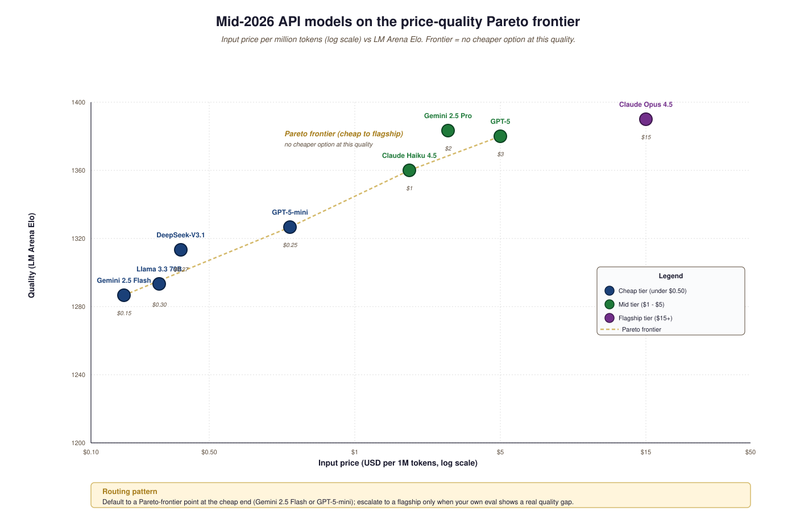

"We split the world into closed APIs, open weights, and the thing you wrote last weekend on Modal. Each tier solves one problem and creates three."
Frontier, Tier-Aware AI Agent
The LLMs you call in Part III split into three tiers by access mode: closed APIs (GPT, Claude, Gemini, the frontier you rent), open weights (Llama, Mistral, Qwen, DeepSeek, the foundation you can host), and customised checkpoints (your fine-tune, your distillation, your LoRA on top of a base). This section tells you which tier earns which call inside an agent or RAG system.
Prerequisites
This section assumes the frontier-model lineage from Section 11.1 through Section 11.3, the open-weights model zoo from Section 10.10, and the fine-tuning recipes from Section 13.1.
The models you call in Part III split into three tiers by access mode. The first is closed-API frontier (the GPT-5 family, Claude Opus 4.5, Gemini 2.5 Pro and successors). The second is open-weight production tier (Llama-3.3 70B and Llama 4 family, Qwen3, DeepSeek-V3.1 / R1, Kimi K2) served either through an aggregator or through your own vLLM / Ollama instance. The third is the small fast tier (Mistral Small, Gemini 2.5 Flash, Claude Haiku 4.5, GPT-5-mini, o4-mini) where latency and cost win over quality. This section walks all three and names the per-token cost order of magnitude as of mid-2026.
Treat the prices below as approximate. Provider pricing changes monthly and varies by region; Artificial Analysis is the right place to check current numbers. What stays roughly stable is the ratio: flagship models cost 10 to 50x what their small siblings cost, and self-hosted open-weight inference cost depends almost entirely on your hardware utilization.
14.4.1 Closed-API flagships
- OpenAI GPT-5 family (Aug 2025) and reasoning variants (o3 and o4-mini): strong on coding, native multimodal (vision + audio), Batch API for 50% discount, prompt caching, structured outputs.
- Anthropic Claude Opus 4.5 and Claude Sonnet 4.5 (2025): strong on agentic tasks, computer use, extended thinking, prompt caching, 200K context default and 1M for select customers.
- Google Gemini 2.5 Pro (March 2025) with Deep Think mode: 1M-2M context, deeply multimodal (PDF, video, audio); the long-context cost leader.
- xAI Grok 4 (July 2025): late but real frontier; native real-time web search baked in.
The 2025 frontier converged on a single architectural pattern: one model that can either answer fast or "think harder" via extended chain-of-thought. Claude 3.7+ exposes a thinking parameter; GPT-5 routes adaptively through an internal think-or-answer gate; Gemini 2.5 Pro adds Deep Think. The practical shift for API-callers: you now choose a reasoning budget per request. Default thinking off for retrieval and summarization; default thinking on for math, code, and multi-step planning. Thinking tokens are 3-5x the price of completion tokens, so the routing decision matters for cost.
14.4.2 Closed-API small / fast tier
- GPT-5-mini and GPT-5-nano: cheap fast tier; ~10x cheaper than the GPT-5 flagship, often faster than GPT-4o.
- Claude Haiku 4.5: smallest Claude; ~$1/$5 per million input/output tokens.
- Gemini 2.5 Flash and Gemini 2.5 Flash-Lite: the cheapest of the frontier-family flash tier, often the best $/token in the market.
- Mistral Small / Codestral: cheap-tier Mistral; OpenAI-compatible API.
14.4.3 Open-weight models served via API
- OpenRouter aggregates Llama 4 family, Qwen3, DeepSeek-V3.1 / R1, Kimi K2, GLM-4.6, Mistral Large, and dozens of fine-tunes under a single OpenAI-compatible key. Useful for cheap access without provisioning your own GPUs.
- Together AI, Groq, Fireworks: dedicated open-weight inference providers. Groq's LPU offers the lowest latency on the market (under 200 ms time-to-first-token for many open models).
- DeepInfra and Anyscale Endpoints: similar aggregators with different pricing tradeoffs.
14.4.4 Comparing the API-callable model lineup
| Model | Provider | In/out per 1M tok | Thinking tokens? | Context | Best for |
|---|---|---|---|---|---|
| GPT-5 | OpenAI | $3 / $15 | Yes (premium) | 400K | Reasoning, code |
| o3 | OpenAI | $10 / $40 (plus thinking premium) | Yes, always | 200K | Heavy reasoning |
| Claude Opus 4.5 | Anthropic | $15 / $75 | Yes (premium) | 200K-1M | Agentic, long writing |
| Gemini 2.5 Pro | $1.25 / $10 | Yes (Deep Think) | 1M-2M | Multimodal, long context | |
| GPT-5-mini | OpenAI | $0.25 / $1.25 | No | 400K | High-volume cheap calls |
| o4-mini | OpenAI | ~$0.55 / $2.20 | Yes, always | 200K | Cheap reasoning |
| Claude Haiku 4.5 | Anthropic | $1 / $5 | No | 200K | Background tasks |
| Gemini 2.5 Flash | $0.15 / $0.60 | No | 1M | Cheapest serious model | |
| Llama-3.3 70B | OpenRouter / Together | $0.30 / $0.30 | No | 128K | Cheap open-weight |
| DeepSeek-V3.1 / R1 | DeepSeek / OpenRouter | $0.14-$0.27 / $0.28-$1.10 | R1: yes | 128K | Cheap reasoning |

Through 2023 and most of 2024, the smallest models from each provider were obviously worse: they hallucinated more, refused more, missed instructions. By mid-2025 the gap closed: Gemini Flash, Claude Haiku, and GPT-5-mini handle most production tasks (extraction, classification, simple coding, RAG answer-generation) within 5% of their flagship siblings at 10 to 50x lower cost. Default to the cheap tier; reach for the flagship only when you measure a quality gap on your own task.
The "default to cheap" advice has one important exception: long multi-step agent traces are where cheap-tier models still drop the ball. Tool-use accuracy at the cheap tier is often 70-85% on a per-step basis, which compounds to 30-50% success on 5-step trajectories. The flagship tier holds 90-95% per step and 60-80% end-to-end. If your application is agentic, A/B the flagship vs cheap tier on real multi-step tasks before locking in cheap as the default; the per-call savings can be eaten by retries and partial failures. The 2025 "Stargate" $500B infrastructure announcement and the DeepSeek-R1 $5.6M base-training disclosure together anchor the cost discussion: frontier capability is now ten thousand times more expensive than the open-recipe alternative.
Code Fragment 14.4.1 below shows how the cache_control flag tells Anthropic to cache the 50K-token system prompt for 5 minutes. Subsequent calls within the cache window pay 0.1x the input price for the cached portion. OpenAI implements automatic prompt caching only above a ~1024-token threshold (no flag needed but the threshold matters: short prompts never hit it); Gemini exposes Context Caching via an explicit cache resource. All three SDKs follow the same pattern and the savings are typically 70 to 90% for RAG pipelines.
import anthropic
client = anthropic.Anthropic()
SYSTEM = open("long-system-prompt.md").read() # 50K tokens, reused
resp = client.messages.create(
model="claude-opus-4-5",
max_tokens=1024,
system=[{"type":"text","text":SYSTEM,
"cache_control":{"type":"ephemeral"}}],
messages=[{"role":"user","content":"summarize section 3"}],
)14.4.5 Picking a default
For Part III exercises: start with Claude Haiku 4.5 or Gemini 2.5 Flash for cheap calls, Claude Opus 4.5 or GPT-5 for the flagship comparisons, and DeepSeek-R1 or DeepSeek-V3.1 through OpenRouter when you need a low-cost reasoning model. If you anticipate hosting your own inference at any scale, the next section (16.5) and Part XIV's full Idea-to-Product Tools of the Trade chapter cover the cost-break math.
What's Next?
In the next section, Section 14.5: External Reading & Communities, we build on the material covered here.